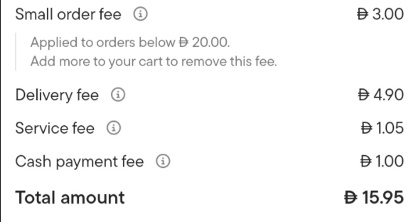
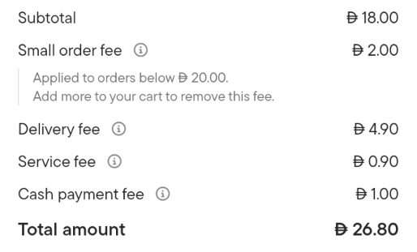
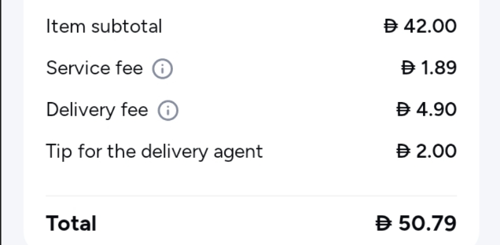
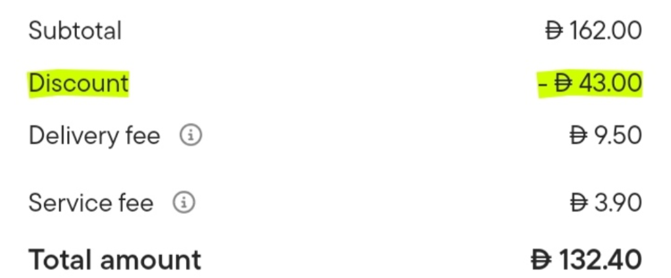

MyMenu · Asking for AED 250,000
A 60 dirham meal. The restaurant keeps 42.
I change that for 300 dirhams a month.
Press → to start
Say this · 30 seconds
"Talabat did not buy the meat. It did not cook the food. It did not wash a single plate. And out of every order, it takes the biggest cut of anybody."
"A customer pays 60 dirhams for a meal. The restaurant keeps 42."
"My name is [your name]. I built MyMenu, and I change that number for 300 dirhams a month."
Stop after "the biggest cut of anybody". Give it two seconds before you say the numbers.
The problem
Talabat takes 15 to 30 percent. Deliveroo takes 25 to 35 percent. And that is before the extra fees they add on top.
Say this · 40 seconds
"Here is what happens when a customer buys a 60 dirham meal through a delivery app."
"The app takes 18 dirhams. The restaurant — who bought the food, cooked it, and packed it — keeps 42."
"Talabat takes 15 to 30 percent. Deliveroo takes 25 to 35. And there are extra fees on top of that."
Point at the red part of the bar when you say 18.
The problem
And after paying all of that, the restaurant still does not know one customer's name or phone number.
Say this · 40 seconds
"A small restaurant sells about 30,000 dirhams a month through the apps. At 25 percent, that is 7,500 dirhams gone every month."
"In one year, that is 90,000 dirhams."
"And here is the part that hurts more. After paying 90,000 dirhams, the restaurant still does not have one customer's phone number. If they want that customer back next week, they pay the app again."
"They are renting their own customers."
The problem




My own screenshots, from real Talabat checkouts. The smaller the order, the worse it gets — and small orders are what a cafeteria sells all day.
Say this · 40 seconds · these are real screenshots
"And the restaurant is not the only one paying. Here are four real Talabat checkouts."
"Six dirhams of food. Nine dirhams ninety-five of fees — a small order fee, a delivery fee, a service fee, and a fee for paying in cash. The fees cost more than the food. Two and a half times more."
"Look what happens as the order gets bigger. Forty-nine percent. Sixteen. Eight. The smaller the basket, the worse the damage — and a small basket is exactly what a cafeteria sells all day."
"So the customer pays twenty-seven dirhams for eighteen dirhams of food, and decides the restaurant is expensive. The restaurant gets the blame for a price it never set."
Point at the +166% and pause. That number does the work — do not read the fee names out, they are on the slide.
Who this is for
The one who pays · my customer
The one who taps · his customer
Roughly 12,000 of the UAE’s 26,795 restaurants fit the left-hand column. That is the market I am counting, not all of them. The profile is my own segmentation, not a published statistic.
Say this · 45 seconds · full wording in the script
"Let me be exact about who I sell to, because 'restaurants' is not an answer. I sell to one man: 30 to 50, his own name on the trade licence, one cafeteria in Deira or Karama. Not the Marina — that is hotels and franchises, and they buy enterprise systems."
"20 to 60 thousand a month, a third of it through a delivery app, and he runs the whole business on WhatsApp. No IT person, no procurement — he decides in one conversation."
"And I know what he types into Google, because it is the same three things. That is my whole advertising plan."
"On the right is his customer, the one who actually taps. Coming back, not discovering — which is why it opens in a browser. Nobody installs an app for one shawarma shop."
One line if you lose the rest: 12,000 restaurants, not 26,795. You are counting the ones you can actually sell to.
My solution
The food is eaten at the table, collected, or taken by the restaurant's own driver. I take the order. I do not drive the food.
Say this · 50 seconds
"MyMenu gives every restaurant its own ordering page. Three people use it."
"The customer scans a code on the table. The menu opens. They order. No app to download, no account."
"The kitchen gets one screen showing today's orders. They tap to move an order from received, to cooking, to ready."
"The owner gets everything else — the money, the menu, and the customer list."
"One important thing: I do not deliver food. The customer is at the table, or collects it, or the restaurant's own driver takes it."
What he could buy instead
And I am not fighting Talabat. Talabat brings new people; I keep the ones who already like the food. Most restaurants should run both — I say so on my own website.
Say this · 45 seconds
"So why doesn't he just buy something that already exists? Here is everything he could buy instead."
"Talabat is not my rival, it is the problem — it takes a third and keeps his customer."
"ChatFood built almost exactly this in Dubai and got bought for it. That is proof, and I will come back to it. But they belong to Deliverect now, who sell to chains. Ordable is the real competitor, but it is priced for a bigger operator. Foodics is a full till system — thousands of dirhams and a week of training. And a QR code that opens a PDF just shows a menu; it cannot take an order."
"Every one of them is built for a bigger kitchen than his. I am built for nobody else on purpose."
Say the last line slowly. Then move on — do not read the table out row by row, they can read.
If asked "is it in Arabic?" — say the true thing: "The layout flips to Arabic today, and I can show you. The words are translated on the sign-in and the kitchen and not yet everywhere else. That is the next thing I build, and it is why part of the money is a part-time Arabic speaker." Do not claim it is finished. Offer to switch it on and let them see the page flip — a half-built thing shown honestly beats a finished thing described vaguely.
How I make money
A percentage is the thing they are running away from. If I took a cut, I would start wanting their bills to be bigger — and I would become the thing they left.
Say this · 25 seconds
"I charge 300 dirhams a month. That is it. It does not matter if they do 50 orders or 5,000 orders — the price is the same."
"The first 30 orders every month are free, so they can try it properly before they pay me anything."
"Why not take a percentage? Because a percentage is exactly what they are running away from. If I took a cut, I would start wanting their bills to be bigger. I would become the same thing they left."
Why a restaurant says yes
300 dirhams is what the app would take on 1,200 dirhams of orders. At 60 dirhams a meal, that is 20 orders — less than one a day.
And my app proves it to them. The owner's screen counts up how much they saved this month. I never have to sell it twice.
Say this · 45 seconds
"Here is the number that makes a restaurant say yes."
"300 dirhams is what the delivery app would take on 1,200 dirhams of orders. At 60 dirhams a meal, that is only 20 orders in a whole month. Less than one a day."
"After 20 orders, everything they sell, they keep."
"And I do not have to keep convincing them. When the owner logs in, the screen shows how much money they saved this month. The app sells itself every day."
The market
1,000 restaurants paying 300 a month is 3.6 million dirhams a year.
Say this · 40 seconds
"There are 26,795 restaurants and cafés in the UAE, and 9.2 billion dirhams went through food delivery here in 2024, growing 7 percent a year. So the problem gets bigger, not smaller."
"I am not asking you to believe I get all of them. A thousand in three years is under 4 in every 100 — and a thousand is 3.6 million a year."
Shortened on purpose. This is the slide to cut if you are behind — slide 5 already made the market argument that matters, and this one is just the size of it.
Proof this works
So this is not a guess. It works here, and buyers exist. ChatFood now belongs to a big company that sells to large chains — the small one-branch restaurant is not their customer any more. That is the gap I am selling into.
Say this · 45 seconds · your strongest slide
"You might be thinking: if this is such a good idea, why has nobody done it? Somebody did."
"A Dubai company called ChatFood built almost exactly this. They took 100 million dirhams in orders and saved restaurants 30 million in commission. In May 2023, a company called Deliverect bought them."
"That is good news for you, for two reasons. One: the idea is proven in this exact market. Two: there is already a buyer who paid for it."
"And ChatFood now belongs to a big company that sells to big chains. The small one-branch restaurant is not their customer any more. That is my gap."
What I am asking for
I am not asking you to pay for the software. The software is finished — you are about to watch it work. I am asking you to pay for the one thing I cannot do alone, which is knock on 200 doors.
Or buy it outright: AED 750,000 for all of it — code, brand, customers — plus AED 8,000 a month to keep it running. I would rather you took the first deal, and so would you if the plan holds. My risk is selling, not software.
Say this · 55 seconds · full wording in the script
"250,000 dirhams for 15 percent. And I want to be precise about what it buys, because it is not the software — that is finished, you are about to watch it work."
"96,000 is a salesperson for a year. 48,000 is part-time Arabic support, because an owner who cannot get an answer cancels. 30,000 is advertising, aimed at the three searches I showed you. 76,000 is licence, card payments, table stands and hosting."
"You take 15 percent and you keep it — not a share of profit for one year. At 200 restaurants that is 720,000 a year, and your stake is worth 430,000 to 650,000 inside eighteen months."
"If you would rather own the whole thing: 750,000, and I stay on at 8,000 a month to run it. I would rather you took the first deal, and if the plan works, so would you."
"My risk is selling, not software. That is what your money is for. Now let me show you the app."
Why 750,000, if asked: about one year of the plan's revenue, and they are buying the upside, not the code. The 8,000 a month is a maintenance retainer — it does not promise new features.
Demo · about 5 minutes left
Sources — commission rates: ReconcileOS 2026, onlineemenu 2026; market size: Grand View Research; restaurant counts: xMap, Restroworks; ChatFood: Caterer Middle East.
Demo · keep it to four steps
Do not walk through every page. Four steps only, exactly as listed. Every step here is something you already promised on an earlier slide — that is the only reason it is in the demo.
The third tap matters. The savings counter only counts orders that reached "done" — an order left on "ready" moves today's figures but not the counter. Tap it all the way through, or the number you are pointing at will not have changed.
End on the savings counter going up. That is the whole pitch in one number, and it is the last thing they should see.
Do not open the menu editor, the customer list, order history, settings or the drivers page unless somebody asks. They exist, and saying "it is all there, ask me and I will open it" is stronger than spending your last two minutes clicking.
If you have time left, invite them to scan the code themselves.